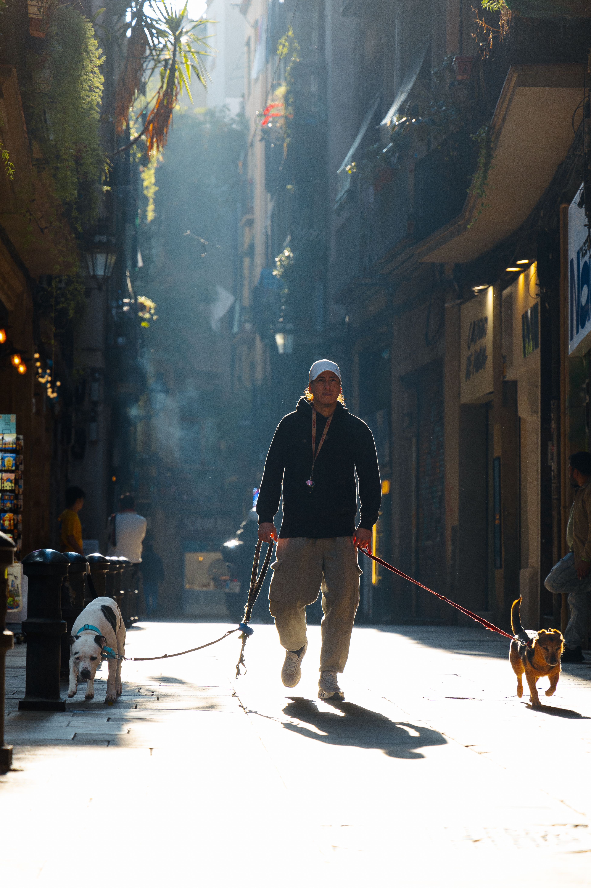

Paseo individual
Atención exclusiva para tu mascota durante 30 o 60 minutos.
Paseos seguros y felices para tu mascota, mientras tú cumples con tu día.
Agenda un paseo
Atención exclusiva para tu mascota durante 30 o 60 minutos.

Tu mascota socializa con otros perros en grupos de máximo 5.

Juego, descanso y cuidado mientras estás en el trabajo.
$65.000 por 5 paseos
$220.000 por 20 paseos

Paseadora desde 2021. Experta en perros grandes.

Especialista en cachorros y perros con mucha energía.

Estudiante de veterinaria. Ideal para mascotas mayores.
Escríbenos y agenda el primer paseo de tu mascota.